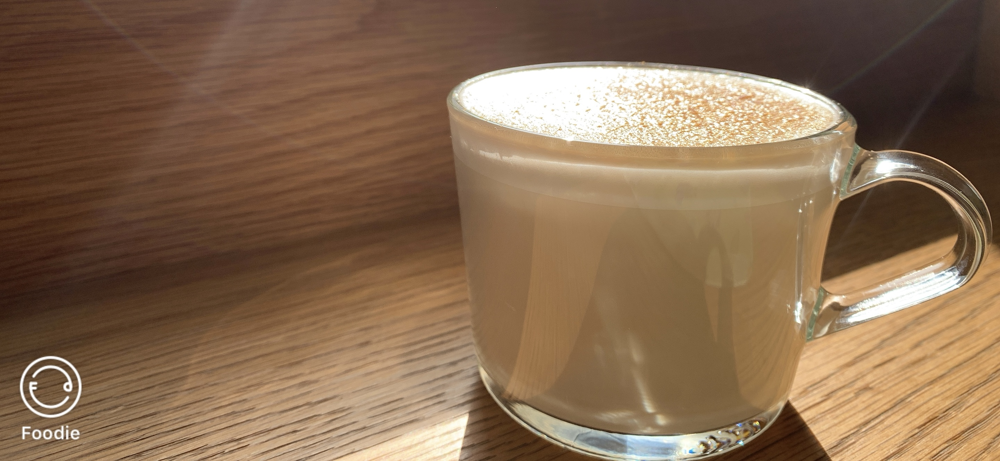

HAVE FUN
我喜歡用照片記錄日常生活中所吃的食物，每當餐點一上來就會挑選一個漂亮的濾鏡幫那道菜拍一張「定裝照」，看到美美的擺盤心情就會愉快很多，「吃」最能療癒人心，每當吃進嘴裡的第一口總能感動味蕾，瞬間覺得世上沒有難事不能用一頓飯解決，如果有，那就兩頓！在科技發達的時代，我們總會用手機拍下許多值得紀念的畫面，若能再加上文字敘述，便能完整記錄當時的心情，希望這個網頁上的文字能讓你勾起曾經在腦海裡那深層的美食記憶！
蜂蜜芥末香雞堡—在週六早起的早晨，一個人獨自前往心中的口袋名單，一踏入室內便感覺店面不大但還滿溫馨，每個餐點都是現點現做，剛好那天是一個晴天，和煦的陽光灑進來，溫暖了獨自一人吃早餐的心，享受美味的漢堡突然聽見正在播放國中時期很喜歡的一首歌曲，身體不由自主的跟著音樂擺動，為這個周末拉開一個很好的序幕。
雞肉咖哩飯—依稀記得那是在一個落日的傍晚，從國家圖書館回到景美，在捷運上思考著晚餐要吃甚麼，突然想到朋友推薦高CP的美食剛好離捷運站不遠，於是帶著期待的心前往，沒想到竟然如此的好吃，雞肉完全不會柴，濃濃的咖哩加上些許的奶油醬，一個人吃完全剛好，吃飽後散散步，一切事物都安排的剛剛好。
蛤蜊義大利麵—剛開學的某天，跟著室友一起到MINT Pasta，果然每到吃飯時刻都是需要等待；滿滿的蛤蜊配上細麵，九層塔以及白醬搭配的極好，以這個價位的義大利麵店而言，真的會納入學生們的口袋名單，好吃又便宜，而且品項也很多，完全值得推薦，若有選擇障礙的朋友可能需要一些時間好好抉擇一番。
雙管四神湯油飯—還記得那天的是一個陰天，先去了西門町逛街接著又到了信義區的四四南村逛市集，喜歡看看市集裡那些很獨特的商品，晚上回到景美，想到常常經過的店都還沒有品嘗過，於是點了一碗四神湯跟油飯，四神湯裡的粉腸是標榜沒有洗藥水的，料多又實在，油飯加上四神湯簡直是「神級」的搭配，如果喜歡吃傳統古早味美食的人一定要來嘗試。
禾牧酸辣麵—這家的酸辣麵跟我所想像的不同，獨特的醬料，吃起來微辣會讓人想再吃一口，麵條的Q度也十分的出色，半顆的糖心蛋做了一個中和的效果，使整碗麵各有特色，喜歡吃辣的朋友可以來這家店嘗試一次！
滑蛋豬肉丼飯—跟家人一同共進晚餐，日式餐廳是我最喜歡的地方，除了日式料理的美味，還有整體給顧客的感受的非常溫暖，木頭色的裝潢，會讓我覺得彷彿置身家中，這道料理的份量不大，但是味道級好，滑蛋配上浸泡高湯的飯，每一口都很滑順。
薯條—回到家最思念的就是奶奶的佳餚，真材實料製作就是為了讓家人們都吃到滿滿的愛心，不知道為甚麼奶奶所炸的薯條特別的好吃，在外讀書的我一個月最期待的就是回到家吃奶奶親手煮的每一道菜，再貴的菜餚都比不上家人給的溫暖。
巴斯克乳酪蛋糕—在暑假的周末到親戚家，跟著家人一起手做蛋糕，從一開始的秤材料到後面的攪拌混合，倒入模型後進入烤箱，泡杯茶靜候一段時間，看到熱呼呼的成品心中的成就感與幸福感難以形容，冰進冰箱等待一日，口感綿密的乳酪蛋糕配上手沖咖啡，完美的下午茶甜點，值得跟朋友們一同分享。
蜂蜜檸檬—這家店位於我的家鄉「大甲區」，有時候久久回一次台中，就會跟我最好的朋友一起約在咖啡廳聊整個下午，因為在外地讀書時見面時間變的很少，所以這段悠閒時光就顯得特別珍貴；樹葉造型的杯墊為這項飲品增加幾分美感，很適合在這裡跟好朋友一起拍照打卡。
如果喜歡看我的美食記錄，歡迎大家追蹤instagram—eat_and_drink_fun，不定期更新貼文！